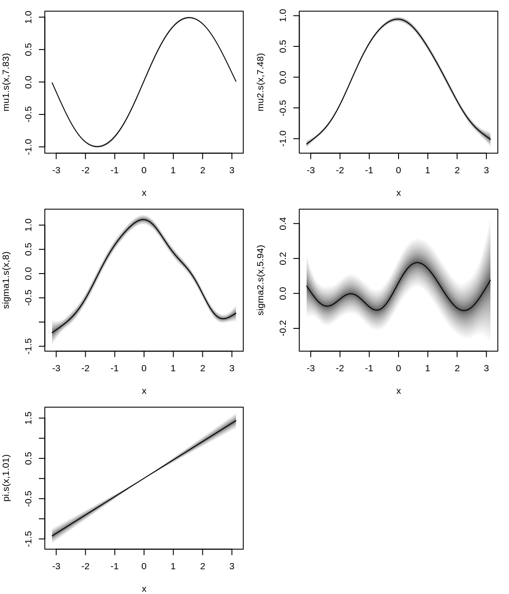
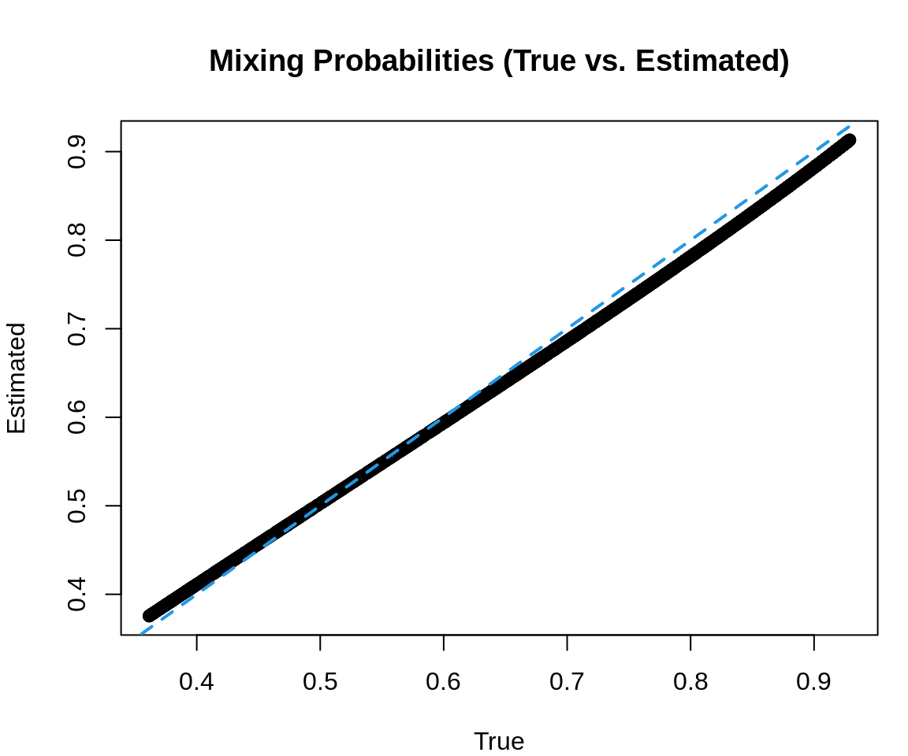
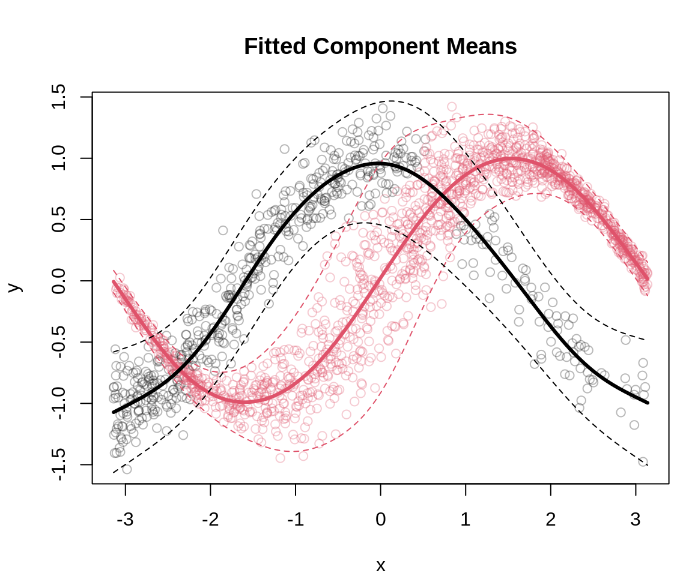

set.seed(123)
## simulate covariate
n <- 2000
x <- sort(runif(n, -pi, pi))
## logistic model for mixing probability (dependent on x)
## this creates a probability that varies with x using a logistic function
mix_prob <- 1 / (1 + exp(-1 - 0.5 * x))
## simulate latent component assignment based on covariate-dependent probability
z <- rbinom(n, 1, mix_prob)
## generate response based on the latent component
y <- ifelse(z == 1,
sin(x) + rnorm(n, sd = exp(-2 + cos(x))),
cos(x) + rnorm(n, sd = 0.2))
## combine into a data frame
d <- data.frame("x" = x, "y" = y)
## plot the data, color by latent component z
par(mar = c(4, 4, 4, 1))
plot(d, col = z + 1, main = "Simulated Data by Latent Component",
xlab = "x", ylab = "y")Mixture Models
Mixture models are used for modeling data generated from multiple distinct processes, where each process can be described by a separate probability distribution. The challenge is that for each observation, we do not know which process generated it, and therefore we must infer the underlying latent components.
This vignette demonstrates how to fit flexible mixture models using gamlss2.
1 Model Overview
In a finite mixture model, each observation \(y_i\) for \(i = 1, \ldots, n\), is assumed to be generated from one of \(K\) distinct underlying distributions. The probability that an observation comes from the \(k\)-th component is determined by the mixing probability \(\pi_k(\mathbf{x}_i)\), which may depend on covariates \(\mathbf{x}_i\). The probability density function (pdf) of \(y_i\) is expressed as
\[ d(y_i \mid \mathbf{x}_i) = \sum_{k=1}^{K} \pi_k(\mathbf{x}_i) d_k(y_i \mid \boldsymbol{\theta}_k(\mathbf{x}_i)). \]
Where
- \(\pi_k(\mathbf{x}_i)\) is the probability that the \(i\)-th observation belongs to the \(k\)-th component,
- \(d_k(y_i \mid \boldsymbol{\theta}_k(\mathbf{x}_i))\) is the pdf of the \(k\)-th component, parameterized by \(\boldsymbol{\theta}_k(\mathbf{x}_i) = (\theta_{1k}(\mathbf{x}_i), \ldots, \theta_{J_kk}(\mathbf{x}_i))^\top\), \(j = 1, \ldots, J_k\),
- and the sum of \(\pi_k(\mathbf{x}_i)\) over all components equals 1.
While \(\pi_k(\mathbf{x}_i)\) represents the prior probability of the observation belonging to the \(k\)-th component, posterior mixing probabilities refine this by considering both the prior and the likelihood of the observed data under each component.
Given the observation \(y_i\) and the estimated model parameters, the posterior probability that \(y_i\) belongs to the \(k\)-th component is computed as
\[ \text{Pr}(z_i = k \mid y_i, \mathbf{x}_i) = \frac{\pi_k(\mathbf{x}_i) d_k(y_i \mid \boldsymbol{\theta}_k(\mathbf{x}_i))}{\sum_{k=1}^K \pi_k(\mathbf{x}_i) d_k(y_i \mid \boldsymbol{\theta}_k(\mathbf{x}_i))}. \]
This posterior probability gives a more accurate assessment of which component likely generated the observation, incorporating both the component probability (prior) and the likelihood of observing the data under each component. In mixture models, these posterior probabilities are often used for:
- Classifying observations: Assigning each observation to the most likely component.
- Analyzing component memberships: Understanding the uncertainty in assigning observations to components.
In practice, posterior mixing probabilities will not always be close to 0 or 1. If an observation could reasonably belong to multiple components, the probabilities may be more evenly distributed across components.
2 Two-Component Normal Mixture Model
For a two-component normal mixture model, the response \(y_i\) is generated by one of two normal distributions. The pdf is given by
\[ d(y_i \mid \mathbf{x}_i) = \sum_{k=1}^2 \pi_k(\mathbf{x}_i) \mathcal{N}(y_i \mid \boldsymbol{\theta}_k = (\mu_k(\mathbf{x}_i), \sigma_k(\mathbf{x}_i))). \]
Where
- \(\mathcal{N}(y \mid \boldsymbol{\theta} = (\mu, \sigma))\) denotes a normal distribution with mean \(\mu\) and standard deviation \(\sigma\),
- the parameters \(\boldsymbol{\theta}_k = (\mu_k(\mathbf{x}_i), \sigma_k(\mathbf{x}_i))^\top\) are functions of covariates \(\mathbf{x}_i\),
- and to ensure the component probabilities sum to one, we set \(\pi_2(\mathbf{x}_i) = 1 - \pi_1(\mathbf{x}_i)\).
3 GAMLSS Framework for the Mixture Model
In the GAMLSS framework, each parameter \(\boldsymbol{\theta}_{k}(\mathbf{x}_i) = (\boldsymbol{\theta}_{1k}(\mathbf{x}_i), \ldots, \boldsymbol{\theta}_{J_kk}(\mathbf{x}_i))^{\top}\), as well as the mixing probabilities \(\pi_k(\mathbf{x}_i)\), are modeled using GAM-type predictors given by
\[ \eta_{jk}(\mathbf{x}_i) = f_{1k}(\mathbf{x}_i) + \dots + f_{L_{jk}k}(\mathbf{x}_i), \]
which are linked to the parameters through \(h_{jk}(\theta_{jk}(\mathbf{x}_i)) = \eta_{jk}(\mathbf{x}_i)\) using suitable link functions \(h_{jk}(\cdot)\). The functions \(f_{lk}(\cdot)\), \(l = 1, \ldots, L_{jk}\), can be nonlinear smooth functions (typically estimated using regression splines), linear effects, or random effects, among others.
For the two-component normal mixture, we use
- Identity link for the means: \(\mu_k(\mathbf{x}_i) = \eta_{1k}(\mathbf{x}_i)\),
- Log-link for the standard deviations: \(\log(\sigma_k(\mathbf{x}_i)) = \eta_{2k}(\mathbf{x}_i)\),
- Logit-link for the mixing probability: \(\log\left(\frac{\pi_k(\mathbf{x}_i)}{1 - \pi_k(\mathbf{x}_i)}\right) = \eta_{\pi k}(\mathbf{x}_i)\).
4 Example using Simulated Data
We begin by simulating data where the response y is generated by one of two normal distributions, depending on a covariate x. The latent component membership is determined by a logistic model. Morover, we let the standard deviation of the first component also depend on x.
5 Defining a Custom gamlss2 Mixture Family
To fit the mixture model in gamlss2, we define a custom family of distributions. In this case, we create a mixture of two normal distributions (using dnorm()) where the mixing probabilities depend on a covariate.
## mixture family definition for a normal mixture
NOmx <- function(...) {
fam <- list(
"family" = "Normal Mixture",
"names" = c("mu1", "mu2", "sigma1", "sigma2", "pi"),
"links" = c("mu1" = "identity", "mu2" = "identity",
"sigma1" = "log", "sigma2" = "log", "pi" = "logit"),
"d" = function(y, par, log = FALSE, ...) {
d <- par$pi * dnorm(y, par$mu1, par$sigma1) +
(1 - par$pi) * dnorm(y, par$mu2, par$sigma2)
if(log) d <- log(d)
return(d)
}
)
class(fam) <- "gamlss2.family"
return(fam)
}Note that in this case, analytical derivatives for the likelihood function are not explicitly defined in the family. As a result, the parameter estimation relies on numerical derivatives. While this approach is feasible, defining analytical derivatives would significantly speed up the estimation process and improve computational efficiency.
6 Estimation
We now proceed to fit the mixture model. The model includes smooth functions (s(x)), which are used to model the means, standard deviations, and the mixing probability for the two components. This flexible approach allows the influence of the covariate x to vary smoothly across the different parameters of the mixture distribution.
The model can be estimated with
## model formula, spline for each parameter
f <- y ~ s(x) | s(x) | s(x) | s(x) | s(x)
## estimate normal GAMLSS mixture model
b <- gamlss2(f, data = d, family = NOmx)Plot estimated effects.
par(mar = c(4, 4, 1, 1))
plot(b)
The estimated effects indicate that the GAMLSS mixture model fits the data very well. Both mean components closely align with the true data-generating process. Additionally, the estimated standard deviation for the first component is also accurately captured, and the linear effect for the mixing probability is well-estimated.
7 Predicting and Visualizing Results
We predict the component-specific means (mu1, mu2) and the mixing probability (pi) from the fitted model. Then, we compare the predicted and true component probabilities and plot the fitted means along with the data.
First, compute predicted parameters.
p <- predict(b, type = "parameter")Plot estimated vs. true component probabilities.
par(mar = c(4, 4, 4, 1))
plot(mix_prob, p[,"pi"], main = "Mixing Probabilities (True vs. Estimated)",
xlab = "True", ylab = "Estimated", col = 1)
abline(0, 1, lty = 2, col = 4, lwd = 2)
Overlay predicted means onto the observed data.
## compute posterior component probabilities
d1 <- dnorm(d$y, p$mu1, p$sigma1)
d2 <- dnorm(d$y, p$mu2, p$sigma2)
totprob <- rowSums(cbind(p$pi * d1, (1 - p$pi) * d2))
p1 <- p$pi * d1 / totprob
p2 <- (1 - p$pi) * d2 / totprob
## get components
comp <- apply(cbind(p2, p1), 1, which.max)
## extract component means and quantiles
f1 <- cbind(
"1%" = qnorm(0.01, mean = p[, "mu1"], sd = p[, "sigma1"]),
"Mean" = p[, "mu1"],
"99%" = qnorm(0.99, mean = p[, "mu1"], sd = p[, "sigma1"])
)
f2 <- cbind(
"1%" = qnorm(0.01, mean = p[, "mu2"], sd = p[, "sigma2"]),
"Mean" = p[, "mu2"],
"99%" = qnorm(0.99, mean = p[, "mu2"], sd = p[, "sigma2"])
)
## colors for plotting components
col <- rep("#DF536B4D", length(p1))
col[comp == 1] <- "#1A1A1A4D"
## plot data and fitted values
par(mar = c(4, 4, 4, 1))
plot(d, col = col, main = "Fitted Component Means",
xlab = "x", ylab = "y")
matplot(d$x, f1, type = "l", lty = c(2, 1, 2),
lwd = c(1, 3, 1), col = 2, add = TRUE)
matplot(d$x, f2, type = "l", lty = c(2, 1, 2),
lwd = c(1, 3, 1), col = 1, add = TRUE)
The plot shows that the estimated component means are highly accurate, and the observations are assigned to the two components with high precision. Moreover, by using a full GAMLSS model for both components, we are able to compute corresponding quantile estimates, which align well with the data.
The posterior probabilities can be visualized with
par(mar = c(4, 4, 4, 1))
plot(p1 ~ d$x, col = comp,
xlab = "x", ylab = "Probability",
main = "Posterior Probabilities")The plot clearly illustrates that component classification is less certain in areas where the data points overlap.
8 Summary
This vignette demonstrated how to estimate flexible mixture models using gamlss2. The framework allows us to model the means, variances, and mixing probabilities of the components in a very flexible manner using smooth effects of covariates.
References
Rigby, R. A., and D. M. Stasinopoulos. 2005. “Generalized Additive Models for Location, Scale and Shape.†Journal of the Royal Statistical Society C 54 (3): 507–54. https://doi.org/10.1111/j.1467-9876.2005.00510.x.